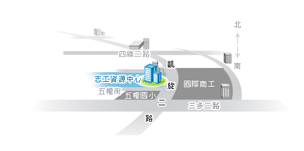

現在位置：
首頁
/
關於我們
關於我們
高雄市政府社會局志願服務資源中心介紹
108年度志願服務資源中心係由社團法人高雄市青少年關懷協會承辦
- 辦理志願服務業務：
- 高雄市志願服務專屬網站建置及管理
- 志願服務業務諮詢與管理：
- 志願服務諮詢專線725-6343。
- 受理全年度本市社會福利類志願服務紀錄冊申請、審查、退補件通知、核發及資料管理統整。
- 受理全年度本市榮譽卡審查、退補件通知、製卡核發及資料管理統整。
- 志願服務行銷專案：
- 編製高雄市志願服務專刊。
- 規劃辦理志願服務行銷方案。
- 志願服務培力專案：
- 辦理本市志工、志工督導及各目的事業主管機關志願服務業務人員在職訓練
- 志願服務創新方案：
- 社會福利類志願服務團隊輔導：
- 辦理志願服務服務資源中心成果分享會。
- 辦理本市志願服務榮譽卡優惠措施之推動。
- 協辦事項：
- 協助輔導本市各目的事業主管機關志願服務業務之執行。
- 協辦本市志願服務會報。
- 協辦社會局社會福利類志願服務運用單位聯繫會報。
- 協助社會局辦理祥和團隊業務輔導。
指導單位
高雄市政府社會局
服務項目：
- 輔導社會福利團體、機構組織運用志願服務團(隊)，並配合推動祥和計畫，整合社會福利類志願服務資源。
- 核發本市社會福利類志願服務紀錄冊。
- 核發本市志願服務榮譽卡。
- 輔導本市各志願服務目的事業主管機關，建置志願服務人員基本資料服務、訓練相關紀錄。
- 推動本市志願服務工作。
高雄市政府社會局
業務承辦人：蘇玲巧、林玉玲、羅佩思
地 址：高雄市苓雅區四維三路2號10樓
洽詢電話：07-337-3381~3
傳 真：07-330-3628
交通方式

交通方式
【捷運】
- R8 三多商圈：請搭乘接駁公車70號、100號、高雄客運102、紅21
- R9 中央公園：請搭乘接駁公車52號、100號、高雄客運100、77號、77號、五福幹線
- R10、O5美麗島站：請搭乘接駁公車52號、100號、248號
- O7文化中心站：請搭乘接駁公車52號、168東幹線
【騎車、開車】
週邊停車場：
五權國小圍牆邊皆可停放摩托車，路邊也可停放汽車，計次
(6小時)30元。
【其他】
詳細接駁路線可至下列網址查詢http://www.krtco.com.tw/service/service-3_3a.aspx
| 70號、100號 |
五權國小站(三多路)，步行約5分鐘。 |
| 52號、高雄客運100 |
五權國小站(凱旋路)，步行約3分鐘。 |
| 高雄客運102 |
國際商工(三多路)，步行約5分鐘。 |
| 紅21 |
長青服務中心(四維路)，步行約5~10分鐘。 |
| 76號、77號、五福幹線 |
文化中心(五福路)，步行約15分鐘。 |
| 248號、72號 |
高師大(同慶路、和平路)，步行約10分鐘。 |
| 168環狀公車 |
五權國小站(凱旋路)，步行約3分鐘。 |
詳細公車路線可至下列網址查詢http://www.khbus.gov.tw/KHWeb/Index.jsp?pg=p6_1
© Copyright 2019 高雄市政府社會局志願服務資源中心